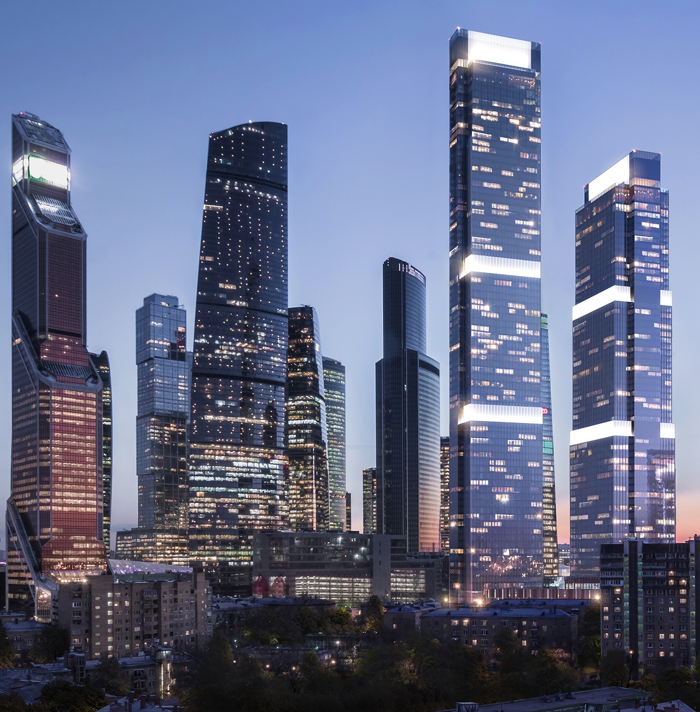
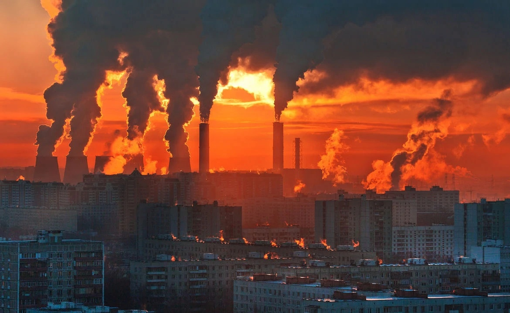
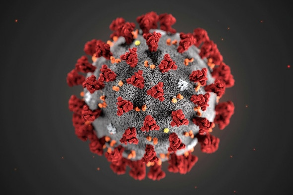
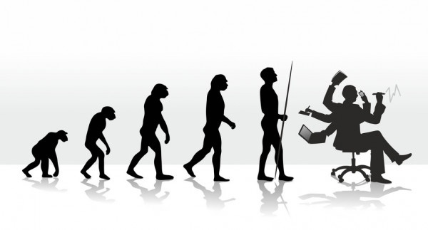

Современное общество
Что из себя представляет
Главенствующей общественно-экономической системой в сегодняшнем мире является капитализм. Капитализм — экономическая система производства и распределения, основанная на частной собственности, юридическом равенстве и свободе предпринимательства. Главным критерием для принятия экономических решений является стремление к увеличению капитала, к получению прибыли.
В капиталистической экономике основные фонды, такие как фабрики, шахты и железные дороги, могут находиться в частной собственности и под частным контролем, труд покупается за деньги в форме заработной платы, прибыль от прироста стоимости капитала поступает частным владельцам.
Характерной особенностью данной системы являются капиталистические циклы, которые представляют собой постоянно повторяющееся движение капиталистического производства от одного экономического кризиса к другому.
Фазы капитализма:
- кризис
- депрессия
- оживление
- подъём
В процессе развития каждой из этих фаз складываются условия для перехода к следующей фазе. Капитализм, как и всякий общественный строй, претерпевает процесс постоянных преобразований. В современной форме капитализма резко обостряется противоречие между космополитизмом капитала и суверенитетом национальных государств, процессами глобализации, в основе которой лежит либерализация самых разных форм социального и экономического общения, и политической властью, все еще сконцентрированной на уровне государств. Нарушается баланс между традиционными государственными институтами принятия решений и транснациональными компаниями. В основе всего этого лежит повсеместное распространение новых форм денег и финансовых инструментов, которые создает информационно-технологическая революция. Речь идет о превращении финансовых инструментов в электронные записи и денежных потоков в потоки информации.
Введение системы межбанковских электронных расчетов способствовало отрыву виртуальной электронно-компьютерной экономики от реальной, финансового капитала от производительного. В течение нескольких секунд огромные средства могут быть перемещены с одного банковского счета на другой, в другую страну, расположенную на другом континенте. Именно эта особенность — чрезмерная значимость финансовой составляющей экономики — становится отличительной чертой нового капитализма.
В современном капиталистическом мире фактически сосуществуют две экономики: реального сектора, в которой создаются реальные товары и услуги, и виртуальная, спекулятивная — торговля биржевыми товарами и различными ценными бумагами. Экономика реального сектора развивается по классическим рыночным законам, её цель — получение прибыли через снижение затрат и повышение качества товаров. Виртуальная же экономика развивается по законам спекуляции, её цель — нажива на товарных и фондовых биржах. Разумеется, виртуальная экономика не может существовать без реального сектора: в сущности, она на нем паразитирует.
Основным политическим режимом современного мира является представительная демократия, при которой основным источником власти признается народ, но управление государством делегируется различным представительным органам, члены которых избираются гражданами. Её суть заключается в опосредованном участии граждан в принятии решений, в выборе ими в органы власти своих представителей, призванных выражать их интересы, принимать законы и отдавать распоряжения.
Основные проблемы
Третья мировая война
Одной из самых главных проблем человечества является возможная термоядерная война. Самым простым способом решения всех конфликтов это применение силы. В свете приближающихся проблем экологии и нехватки ресурсов, решение вопросов с помощью оружия кажется наиболее простым. Но применение термоядерного оружия может быть крайне опасным, так как запасов вооружения хватит, чтобы уничтожить жизнь на земле.
Кто бы ни нанес первый удар, в каком бы районе планеты это ни случилось, произошел бы ответный удар или нет, в любом случае никому не удастся пережить катастрофу. И того, кто нажмет на кнопку пускового устройства, ждет такая же судьба, как и жителей городов, подвергшихся атаке. Та же участь уготована и тем странам, которые никакого участия в войне принимать не будут.
Даже зная все эти последствия, человек может применить смертельное для себя и всего живого на земле оружие. Биосфера все-таки сохранится на земле, но не пригодной для жизни человека она будет сотни тысяч лет.
Поэтому начало ядерной войны для человека будет означать конец его эпохи. Демографическая проблема увеличения численности населения приводит к увеличению возникновения конфликтов и, следовательно, к увеличению вероятности решения их методом силы.
Экологическая катастрофа
Человечество вступило в новую эру своего существования, когда потенциальная мощь создаваемых им средств воздействия на среду обитания становится соизмеримой с могучими силами природы. Деятельность человечества уже перешло тот рубеж, когда его антропогенная нагрузка на биосферу не превышала возможности восстановления ресурсов самой биосферы. Запас ресурсов, особенно энергоносителей, стремительно сокращается.
Почвенный покров стремительно уменьшается. В тоже время загрязнение воды дошло до такого уровня, когда естественные воды не обеспечивают необходимого уровня разбавления слива промышленных вод.
Вирусные эпидемии
Эпидемии различных вирусов издавна терроризировали человечество. Со времён Юстиниановой и бубонной чумы до сегодняшней коронавирусной инфекции «COVID-19». Вторжение вируса в жизнь современной цивилизации оказалось стремительным и колоссальным по своим последствиям. Затронуты её базовые основания, заново определяются отношения и границы общества и природы. Происходящие события заново ставят фундаментальный вопрос о границе между культурой и природой.
Государства, общества, экономика, повседневная жизнь меняются под воздействием биологического существа, невидимого для невооруженного взгляда. Новая природная стихия, парадоксальным образом, приобрела огромный размах и скорость распространения благодаря инфраструктуре современной человеческой цивилизации – транспортным коммуникациям и крупным городам, создающим огромную плотность контактов между людьми. Меры по борьбе с распространением вируса, – новый фронт борьбы между человеком и природой, в центре этой борьбы, как и в предшествующие эпохи, находится вопрос выживания.
Эволюция «Нomo sapiens» продолжается
За последние пять тысяч лет значительная часть генных изменений связана с приспособлением к определенной окружающей среде – как природной, так и созданной самими людьми. Например, в Китае и Африке лишь немногие взрослые могут усваивать свежее молоко, тогда как в Швеции и Дании это почти ни для кого не составляет проблемы. И можно предположить, что жители этих стран приобрели такую способность в результате освоения их предками молочного животноводства.
Пардис Сабети и её коллеги из Гарвардского университета в своём исследовании попытались найти взаимосвязь между естественным отбором и геномом человека. В результате более чем в 300 частях генома были найдены следы недавних изменений, повышавших шансы людей на выживание и деторождение. В числе примеров – сопротивляемость одному из тяжелейших бедствий Африки, вирусу, вызывающему геморрагическую лихорадку Ласа, а также определенная устойчивость части африканского населения к другим заболеваниям, таким как малярия; изменение окраски кожи и активный рост волосяных фолликул у азиатов, или постепенное осветление кожи и приобретение голубого цвета глаз у жителей севера Европы.
Неестественный отбор
В прошлом веке географическая изоляция различных групп людей оказалась нарушена легкостью пространственных перемещений и устранением социальных барьеров, некогда разделявших отдельные расовые группы. В человеческом генофонде ещё никогда не наблюдалось столь невероятного генного смешения локальных популяций. Подобная мобильность человечества вообще может привести к гомогенизации нашего вида.
Процесс естественного отбора тормозится достижениями человечества в медицине и технике. Например, в большей части стран уже не наблюдается массовой детской смертности. Люди с генетическими повреждениями, обреченные в прошлом на смерть, сегодня могут нормально жить и иметь потомство. Наши естественные враги – хищники – также уже не определяют для нас правил выживания.
От «Нomo sapiens» к постчеловеку.
В создании образа будущего человека есть определенные успехи. На основании законов эволюции, уже можно предположить какие части нашего организма подвергнуться изменениям и вследствие чего это будет вызвано. Как считают исследователи, у всех людей со временем будут длинные тонкие пальцы – так удобно нажимать на клавиши клавиатуры компьютеров и другой сложной техники будущего. Не в первый раз строятся прогнозы и насчет изменений в строении зубов. И если раньше речь шла об измельчении и полном исчезновении зубов, то теперь предполагается, что у людей перестанут вырастать зубы мудрости. В одном ученые уверены абсолютно точно – в том, что человечество в общей массе будет выше ростом. Как пишет газета на примере Италии – сейчас в стране 20% людей ростом выше 180 см, хотя после второй мировой войны таких людей было всего 6%.